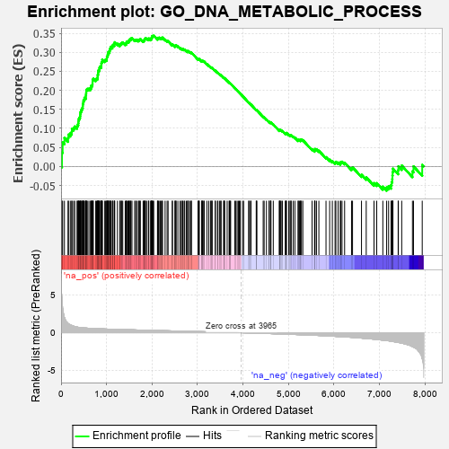
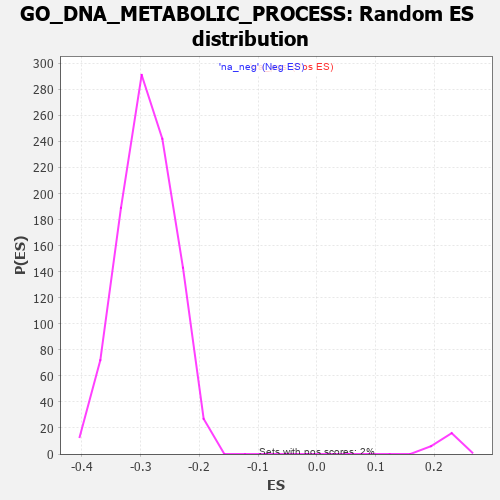

| | | Dataset | 7d |
| Phenotype | NoPhenotypeAvailable |
| Upregulated in class | na_pos |
| GeneSet | GO_DNA_METABOLIC_PROCESS |
| Enrichment Score (ES) | 0.34392554 |
| Normalized Enrichment Score (NES) | 1.5564468 |
| Nominal p-value | 0.0 |
| FDR q-value | 0.25340396 |
| FWER p-Value | 1.0 |
Table: GSEA Results Summary

Fig 1: Enrichment plot: GO_DNA_METABOLIC_PROCESS
Profile of the Running ES Score & Positions of GeneSet Members on the Rank Ordered List
| PROBE | GENE SYMBOL | GENE_TITLE | RANK IN GENE LIST | RANK METRIC SCORE | RUNNING ES | CORE ENRICHMENT | | 1 | H2AX | | | 20 | 4.738 | 0.0369 | Yes |
| 2 | SPO11 | | | 35 | 3.371 | 0.0631 | Yes |
| 3 | GIN1 | | | 74 | 2.010 | 0.0750 | Yes |
| 4 | MTRR | | | 154 | 1.217 | 0.0748 | Yes |
| 5 | SPI1 | | | 162 | 1.182 | 0.0838 | Yes |
| 6 | SWI5 | | | 203 | 1.045 | 0.0873 | Yes |
| 7 | SFR1 | | | 235 | 0.969 | 0.0913 | Yes |
| 8 | CDC45 | | | 239 | 0.950 | 0.0989 | Yes |
| 9 | HGF | | | 276 | 0.870 | 0.1014 | Yes |
| 10 | CCNH | | | 301 | 0.817 | 0.1051 | Yes |
| 11 | GSK3A | | | 351 | 0.745 | 0.1050 | Yes |
| 12 | HUS1 | | | 362 | 0.735 | 0.1098 | Yes |
| 13 | CLSPN | | | 379 | 0.719 | 0.1137 | Yes |
| 14 | AXIN2 | | | 383 | 0.713 | 0.1193 | Yes |
| 15 | BAX | | | 387 | 0.711 | 0.1248 | Yes |
| 16 | NBN | | | 405 | 0.696 | 0.1284 | Yes |
| 17 | RAD9A | | | 418 | 0.681 | 0.1325 | Yes |
| 18 | MLH1 | | | 423 | 0.679 | 0.1376 | Yes |
| 19 | MCM10 | | | 427 | 0.673 | 0.1429 | Yes |
| 20 | CENPS | | | 439 | 0.666 | 0.1470 | Yes |
| 21 | ERCC1 | | | 453 | 0.660 | 0.1508 | Yes |
| 22 | WRN | | | 469 | 0.649 | 0.1543 | Yes |
| 23 | FAN1 | | | 477 | 0.645 | 0.1587 | Yes |
| 24 | ORC3 | | | 479 | 0.644 | 0.1639 | Yes |
| 25 | RFC2 | | | 488 | 0.635 | 0.1682 | Yes |
| 26 | MND1 | | | 492 | 0.633 | 0.1731 | Yes |
| 27 | THOC1 | | | 507 | 0.627 | 0.1765 | Yes |
| 28 | MGME1 | | | 515 | 0.625 | 0.1808 | Yes |
| 29 | ASCC2 | | | 545 | 0.614 | 0.1821 | Yes |
| 30 | MCM2 | | | 546 | 0.614 | 0.1873 | Yes |
| 31 | ORC2 | | | 550 | 0.613 | 0.1920 | Yes |
| 32 | MSH5 | | | 554 | 0.612 | 0.1967 | Yes |
| 33 | YLPM1 | | | 556 | 0.611 | 0.2016 | Yes |
| 34 | APEX1 | | | 577 | 0.604 | 0.2041 | Yes |
| 35 | MCM7 | | | 612 | 0.591 | 0.2046 | Yes |
| 36 | MCM8 | | | 646 | 0.578 | 0.2051 | Yes |
| 37 | PARN | | | 660 | 0.572 | 0.2082 | Yes |
| 38 | RFC3 | | | 663 | 0.571 | 0.2127 | Yes |
| 39 | CDK7 | | | 686 | 0.564 | 0.2145 | Yes |
| 40 | ATP23 | | | 691 | 0.562 | 0.2187 | Yes |
| 41 | MRE11 | | | 693 | 0.560 | 0.2232 | Yes |
| 42 | XRCC6 | | | 694 | 0.560 | 0.2279 | Yes |
| 43 | CDC6 | | | 709 | 0.557 | 0.2307 | Yes |
| 44 | TDRD9 | | | 761 | 0.542 | 0.2286 | Yes |
| 45 | RAD21 | | | 779 | 0.538 | 0.2309 | Yes |
| 46 | EXD2 | | | 801 | 0.532 | 0.2326 | Yes |
| 47 | BLM | | | 804 | 0.531 | 0.2368 | Yes |
| 48 | GAR1 | | | 806 | 0.530 | 0.2411 | Yes |
| 49 | RFC4 | | | 815 | 0.528 | 0.2444 | Yes |
| 50 | RPA1 | | | 817 | 0.527 | 0.2487 | Yes |
| 51 | TCEA1 | | | 821 | 0.526 | 0.2527 | Yes |
| 52 | PPIE | | | 842 | 0.521 | 0.2544 | Yes |
| 53 | RFWD3 | | | 843 | 0.521 | 0.2587 | Yes |
| 54 | RPA2 | | | 851 | 0.519 | 0.2622 | Yes |
| 55 | HDAC8 | | | 881 | 0.510 | 0.2626 | Yes |
| 56 | PARG | | | 884 | 0.509 | 0.2666 | Yes |
| 57 | RMI1 | | | 886 | 0.509 | 0.2707 | Yes |
| 58 | HMGB2 | | | 892 | 0.507 | 0.2743 | Yes |
| 59 | STOX1 | | | 905 | 0.506 | 0.2770 | Yes |
| 60 | NHP2 | | | 906 | 0.505 | 0.2812 | Yes |
| 61 | TOP3B | | | 960 | 0.493 | 0.2784 | Yes |
| 62 | WDR48 | | | 975 | 0.489 | 0.2807 | Yes |
| 63 | MEN1 | | | 1003 | 0.483 | 0.2812 | Yes |
| 64 | TELO2 | | | 1006 | 0.482 | 0.2849 | Yes |
| 65 | HMGB4 | | | 1008 | 0.482 | 0.2888 | Yes |
| 66 | ORC5 | | | 1022 | 0.479 | 0.2911 | Yes |
| 67 | REC8 | | | 1028 | 0.478 | 0.2945 | Yes |
| 68 | ISY1 | | | 1036 | 0.476 | 0.2975 | Yes |
| 69 | AKT1 | | | 1040 | 0.476 | 0.3011 | Yes |
| 70 | WDR70 | | | 1066 | 0.470 | 0.3018 | Yes |
| 71 | XPA | | | 1070 | 0.469 | 0.3053 | Yes |
| 72 | AIFM1 | | | 1072 | 0.469 | 0.3091 | Yes |
| 73 | DEK | | | 1088 | 0.466 | 0.3110 | Yes |
| 74 | RAD51 | | | 1090 | 0.466 | 0.3147 | Yes |
| 75 | SRC | | | 1128 | 0.459 | 0.3138 | Yes |
| 76 | KMT2A | | | 1130 | 0.458 | 0.3174 | Yes |
| 77 | MCM3 | | | 1142 | 0.456 | 0.3198 | Yes |
| 78 | WDHD1 | | | 1172 | 0.451 | 0.3198 | Yes |
| 79 | ERCC3 | | | 1173 | 0.451 | 0.3236 | Yes |
| 80 | TFDP1 | | | 1180 | 0.450 | 0.3265 | Yes |
| 81 | KAT7 | | | 1240 | 0.440 | 0.3225 | Yes |
| 82 | DKC1 | | | 1292 | 0.431 | 0.3195 | Yes |
| 83 | FKBP6 | | | 1301 | 0.428 | 0.3220 | Yes |
| 84 | SSRP1 | | | 1323 | 0.424 | 0.3228 | Yes |
| 85 | UBR2 | | | 1334 | 0.423 | 0.3251 | Yes |
| 86 | PMS1 | | | 1356 | 0.418 | 0.3258 | Yes |
| 87 | APEX2 | | | 1410 | 0.408 | 0.3223 | Yes |
| 88 | PDS5B | | | 1432 | 0.403 | 0.3230 | Yes |
| 89 | DDX4 | | | 1436 | 0.403 | 0.3259 | Yes |
| 90 | RBX1 | | | 1445 | 0.401 | 0.3282 | Yes |
| 91 | DACH1 | | | 1471 | 0.395 | 0.3283 | Yes |
| 92 | ENDOV | | | 1491 | 0.391 | 0.3291 | Yes |
| 93 | UVSSA | | | 1496 | 0.391 | 0.3318 | Yes |
| 94 | MCM6 | | | 1506 | 0.389 | 0.3339 | Yes |
| 95 | TDRD5 | | | 1528 | 0.387 | 0.3344 | Yes |
| 96 | FANCI | | | 1537 | 0.385 | 0.3366 | Yes |
| 97 | DCAF1 | | | 1559 | 0.381 | 0.3370 | Yes |
| 98 | KDM1B | | | 1618 | 0.371 | 0.3326 | Yes |
| 99 | DDB1 | | | 1642 | 0.366 | 0.3326 | Yes |
| 100 | ORC1 | | | 1661 | 0.363 | 0.3333 | Yes |
| 101 | ERCC8 | | | 1699 | 0.357 | 0.3315 | Yes |
| 102 | ERCC2 | | | 1712 | 0.354 | 0.3329 | Yes |
| 103 | KMT2E | | | 1730 | 0.350 | 0.3336 | Yes |
| 104 | MRNIP | | | 1743 | 0.346 | 0.3349 | Yes |
| 105 | RAD17 | | | 1804 | 0.336 | 0.3299 | Yes |
| 106 | MSH2 | | | 1819 | 0.334 | 0.3309 | Yes |
| 107 | UVRAG | | | 1831 | 0.332 | 0.3322 | Yes |
| 108 | TDRKH | | | 1836 | 0.331 | 0.3345 | Yes |
| 109 | TCF7 | | | 1848 | 0.328 | 0.3358 | Yes |
| 110 | OTUB1 | | | 1857 | 0.326 | 0.3374 | Yes |
| 111 | PAK3 | | | 1889 | 0.322 | 0.3361 | Yes |
| 112 | MMS19 | | | 1924 | 0.317 | 0.3343 | Yes |
| 113 | EMSY | | | 1929 | 0.316 | 0.3364 | Yes |
| 114 | NFRKB | | | 1968 | 0.310 | 0.3341 | Yes |
| 115 | HELQ | | | 1982 | 0.307 | 0.3350 | Yes |
| 116 | POLH | | | 1983 | 0.307 | 0.3375 | Yes |
| 117 | MCRS1 | | | 1996 | 0.305 | 0.3385 | Yes |
| 118 | ASCC3 | | | 2000 | 0.305 | 0.3407 | Yes |
| 119 | EXO1 | | | 2002 | 0.304 | 0.3431 | Yes |
| 120 | DMAP1 | | | 2025 | 0.301 | 0.3427 | Yes |
| 121 | HMCES | | | 2036 | 0.300 | 0.3439 | Yes |
| 122 | INO80 | | | 2120 | 0.288 | 0.3356 | No |
| 123 | TONSL | | | 2121 | 0.288 | 0.3379 | No |
| 124 | PSME4 | | | 2143 | 0.285 | 0.3376 | No |
| 125 | DTL | | | 2154 | 0.284 | 0.3387 | No |
| 126 | UBE2A | | | 2183 | 0.278 | 0.3374 | No |
| 127 | ATAD5 | | | 2197 | 0.277 | 0.3380 | No |
| 128 | CDK2 | | | 2226 | 0.272 | 0.3366 | No |
| 129 | BAZ2A | | | 2227 | 0.272 | 0.3389 | No |
| 130 | XRCC1 | | | 2287 | 0.262 | 0.3334 | No |
| 131 | TOP3A | | | 2331 | 0.256 | 0.3299 | No |
| 132 | CDC5L | | | 2353 | 0.253 | 0.3293 | No |
| 133 | FEN1 | | | 2446 | 0.237 | 0.3194 | No |
| 134 | KDM1A | | | 2447 | 0.237 | 0.3213 | No |
| 135 | CDT1 | | | 2505 | 0.226 | 0.3158 | No |
| 136 | HUWE1 | | | 2506 | 0.225 | 0.3177 | No |
| 137 | MBD3 | | | 2524 | 0.223 | 0.3173 | No |
| 138 | RAD1 | | | 2528 | 0.223 | 0.3188 | No |
| 139 | HEMK1 | | | 2568 | 0.217 | 0.3155 | No |
| 140 | RTF2 | | | 2615 | 0.210 | 0.3113 | No |
| 141 | KAT5 | | | 2644 | 0.206 | 0.3094 | No |
| 142 | ARID2 | | | 2664 | 0.204 | 0.3086 | No |
| 143 | MUS81 | | | 2673 | 0.202 | 0.3093 | No |
| 144 | MARF1 | | | 2704 | 0.198 | 0.3070 | No |
| 145 | DDX1 | | | 2718 | 0.196 | 0.3070 | No |
| 146 | PPIA | | | 2754 | 0.190 | 0.3040 | No |
| 147 | NSD2 | | | 2784 | 0.185 | 0.3018 | No |
| 148 | XRN1 | | | 2786 | 0.185 | 0.3032 | No |
| 149 | ATR | | | 2800 | 0.183 | 0.3031 | No |
| 150 | EEPD1 | | | 2835 | 0.178 | 0.3001 | No |
| 151 | AQR | | | 2863 | 0.173 | 0.2981 | No |
| 152 | UCHL5 | | | 2864 | 0.172 | 0.2995 | No |
| 153 | RTEL1 | | | 3010 | 0.148 | 0.2819 | No |
| 154 | BRCA2 | | | 3024 | 0.146 | 0.2814 | No |
| 155 | PIAS4 | | | 3034 | 0.145 | 0.2815 | No |
| 156 | LEF1 | | | 3037 | 0.144 | 0.2824 | No |
| 157 | TIGAR | | | 3091 | 0.138 | 0.2767 | No |
| 158 | CUL4A | | | 3097 | 0.137 | 0.2772 | No |
| 159 | REV1 | | | 3104 | 0.136 | 0.2775 | No |
| 160 | MDC1 | | | 3113 | 0.135 | 0.2776 | No |
| 161 | OGG1 | | | 3135 | 0.132 | 0.2760 | No |
| 162 | ASCC1 | | | 3146 | 0.131 | 0.2758 | No |
| 163 | FZR1 | | | 3205 | 0.122 | 0.2693 | No |
| 164 | EME1 | | | 3246 | 0.114 | 0.2650 | No |
| 165 | SMG5 | | | 3285 | 0.108 | 0.2610 | No |
| 166 | ASZ1 | | | 3299 | 0.106 | 0.2602 | No |
| 167 | PARP2 | | | 3316 | 0.103 | 0.2590 | No |
| 168 | TDRD1 | | | 3321 | 0.101 | 0.2593 | No |
| 169 | RFC5 | | | 3389 | 0.091 | 0.2514 | No |
| 170 | ORC4 | | | 3391 | 0.090 | 0.2520 | No |
| 171 | RFC1 | | | 3437 | 0.085 | 0.2468 | No |
| 172 | TOP1 | | | 3449 | 0.084 | 0.2461 | No |
| 173 | ERI1 | | | 3486 | 0.079 | 0.2421 | No |
| 174 | XPC | | | 3509 | 0.076 | 0.2399 | No |
| 175 | UBR5 | | | 3518 | 0.074 | 0.2395 | No |
| 176 | NOP10 | | | 3573 | 0.064 | 0.2330 | No |
| 177 | LRWD1 | | | 3582 | 0.063 | 0.2325 | No |
| 178 | MAPK3 | | | 3589 | 0.062 | 0.2322 | No |
| 179 | ZNF91 | | | 3595 | 0.061 | 0.2321 | No |
| 180 | SPRTN | | | 3651 | 0.051 | 0.2254 | No |
| 181 | DHX9 | | | 3693 | 0.044 | 0.2204 | No |
| 182 | SMC3 | | | 3701 | 0.042 | 0.2198 | No |
| 183 | HSF1 | | | 3718 | 0.039 | 0.2181 | No |
| 184 | CNBP | | | 3728 | 0.037 | 0.2172 | No |
| 185 | CHD1L | | | 3819 | 0.024 | 0.2058 | No |
| 186 | SMG1 | | | 3843 | 0.021 | 0.2029 | No |
| 187 | NEK2 | | | 3871 | 0.016 | 0.1996 | No |
| 188 | NIPBL | | | 3900 | 0.010 | 0.1960 | No |
| 189 | HINFP | | | 3920 | 0.006 | 0.1936 | No |
| 190 | TOP2B | | | 3938 | 0.005 | 0.1914 | No |
| 191 | EYA1 | | | 3987 | -0.006 | 0.1853 | No |
| 192 | PARP1 | | | 4014 | -0.010 | 0.1820 | No |
| 193 | ABL1 | | | 4125 | -0.027 | 0.1679 | No |
| 194 | MSH6 | | | 4129 | -0.028 | 0.1678 | No |
| 195 | MCM9 | | | 4163 | -0.036 | 0.1638 | No |
| 196 | MSH4 | | | 4176 | -0.038 | 0.1625 | No |
| 197 | TDG | | | 4290 | -0.058 | 0.1484 | No |
| 198 | RAN | | | 4299 | -0.059 | 0.1478 | No |
| 199 | HERC2 | | | 4302 | -0.060 | 0.1480 | No |
| 200 | SETD2 | | | 4443 | -0.084 | 0.1306 | No |
| 201 | ERCC6 | | | 4464 | -0.087 | 0.1287 | No |
| 202 | PINX1 | | | 4515 | -0.097 | 0.1230 | No |
| 203 | PNKP | | | 4572 | -0.111 | 0.1167 | No |
| 204 | MPV17 | | | 4575 | -0.112 | 0.1173 | No |
| 205 | ESCO2 | | | 4605 | -0.119 | 0.1146 | No |
| 206 | SMC1A | | | 4609 | -0.120 | 0.1152 | No |
| 207 | GATA3 | | | 4614 | -0.120 | 0.1157 | No |
| 208 | TTC5 | | | 4665 | -0.131 | 0.1103 | No |
| 209 | PLD6 | | | 4799 | -0.157 | 0.0943 | No |
| 210 | TERT | | | 4801 | -0.157 | 0.0955 | No |
| 211 | PPM1D | | | 4805 | -0.158 | 0.0964 | No |
| 212 | TAOK3 | | | 4823 | -0.162 | 0.0956 | No |
| 213 | TIPIN | | | 4839 | -0.166 | 0.0950 | No |
| 214 | CBS | | | 4867 | -0.170 | 0.0929 | No |
| 215 | ATRX | | | 4929 | -0.184 | 0.0865 | No |
| 216 | EP300 | | | 4941 | -0.186 | 0.0867 | No |
| 217 | XRCC5 | | | 4946 | -0.187 | 0.0877 | No |
| 218 | PRKDC | | | 4955 | -0.189 | 0.0882 | No |
| 219 | KLF4 | | | 5005 | -0.198 | 0.0835 | No |
| 220 | PURA | | | 5032 | -0.205 | 0.0819 | No |
| 221 | REV3L | | | 5051 | -0.209 | 0.0813 | No |
| 222 | PLD3 | | | 5059 | -0.212 | 0.0821 | No |
| 223 | DDX11 | | | 5102 | -0.225 | 0.0785 | No |
| 224 | FLCN | | | 5140 | -0.235 | 0.0757 | No |
| 225 | ATM | | | 5210 | -0.249 | 0.0688 | No |
| 226 | TOP2A | | | 5216 | -0.250 | 0.0702 | No |
| 227 | TNKS2 | | | 5239 | -0.254 | 0.0695 | No |
| 228 | CDK1 | | | 5264 | -0.262 | 0.0686 | No |
| 229 | PICK1 | | | 5265 | -0.263 | 0.0708 | No |
| 230 | ERCC5 | | | 5284 | -0.268 | 0.0707 | No |
| 231 | RAD50 | | | 5314 | -0.276 | 0.0692 | No |
| 232 | CERS1 | | | 5518 | -0.325 | 0.0455 | No |
| 233 | NVL | | | 5572 | -0.338 | 0.0415 | No |
| 234 | SPHK1 | | | 5576 | -0.339 | 0.0439 | No |
| 235 | PMS2 | | | 5583 | -0.340 | 0.0460 | No |
| 236 | GNL3 | | | 5614 | -0.349 | 0.0450 | No |
| 237 | MEIOB | | | 5667 | -0.366 | 0.0413 | No |
| 238 | FANCM | | | 5824 | -0.413 | 0.0245 | No |
| 239 | LIN9 | | | 5904 | -0.437 | 0.0179 | No |
| 240 | SH2B1 | | | 5963 | -0.459 | 0.0142 | No |
| 241 | JMY | | | 6023 | -0.479 | 0.0105 | No |
| 242 | POLK | | | 6041 | -0.486 | 0.0123 | No |
| 243 | UBB | | | 6090 | -0.503 | 0.0103 | No |
| 244 | TNKS | | | 6138 | -0.516 | 0.0085 | No |
| 245 | RNF8 | | | 6147 | -0.518 | 0.0118 | No |
| 246 | RAG1 | | | 6176 | -0.530 | 0.0125 | No |
| 247 | RGN | | | 6233 | -0.547 | 0.0098 | No |
| 248 | ISG15 | | | 6385 | -0.608 | -0.0047 | No |
| 249 | UBE2N | | | 6407 | -0.621 | -0.0023 | No |
| 250 | PIF1 | | | 6604 | -0.713 | -0.0218 | No |
| 251 | EGFR | | | 6708 | -0.765 | -0.0288 | No |
| 252 | HFM1 | | | 6879 | -0.855 | -0.0437 | No |
| 253 | DOT1L | | | 6939 | -0.897 | -0.0439 | No |
| 254 | CETN1 | | | 7073 | -0.978 | -0.0530 | No |
| 255 | UFD1 | | | 7157 | -1.040 | -0.0551 | No |
| 256 | CETN2 | | | 7200 | -1.070 | -0.0517 | No |
| 257 | REXO4 | | | 7253 | -1.126 | -0.0490 | No |
| 258 | CDK9 | | | 7266 | -1.138 | -0.0411 | No |
| 259 | CIB1 | | | 7280 | -1.152 | -0.0332 | No |
| 260 | TEP1 | | | 7284 | -1.155 | -0.0240 | No |
| 261 | PARP3 | | | 7289 | -1.158 | -0.0148 | No |
| 262 | SYCP1 | | | 7295 | -1.167 | -0.0058 | No |
| 263 | UBC | | | 7410 | -1.274 | -0.0099 | No |
| 264 | NEK7 | | | 7415 | -1.285 | 0.0003 | No |
| 265 | XRN2 | | | 7488 | -1.384 | 0.0024 | No |
| 266 | DCP2 | | | 7724 | -1.833 | -0.0128 | No |
| 267 | CASP3 | | | 7747 | -1.902 | 0.0002 | No |
| 268 | WDR33 | | | 7939 | -3.452 | 0.0042 | No |
Table: GSEA details [plain text format]

Fig 2: GO_DNA_METABOLIC_PROCESS: Random ES distribution
Gene set null distribution of ES for GO_DNA_METABOLIC_PROCESS